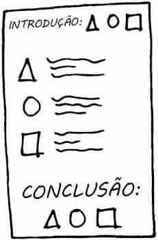
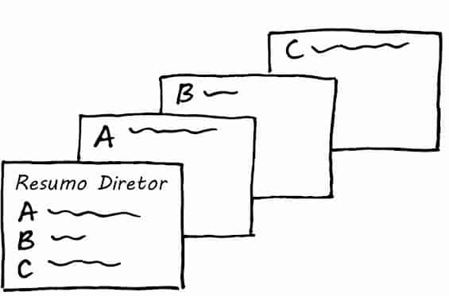
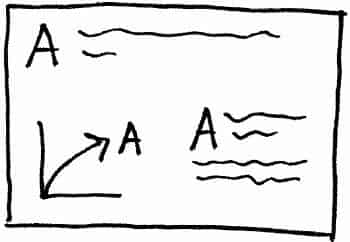
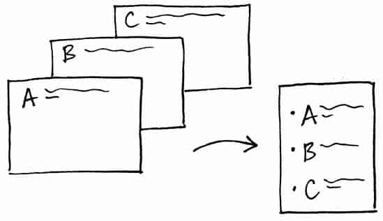

Em meus workshops, a lição sobre storytelling frequentemente começa com um exercício de imaginação. Eu peço aos participantes para fecharem os olhos e lembrarem da história da Chapeuzinho Vermelho, considerando especificamente a trama, as reviravoltas e o final. Às vezes, esse exercício gera algumas risadas; as pessoas se perguntam sobre sua relevância ou corajosamente a confundem com Os Três Porquinhos. Mas acho que a maioria dos participantes (normalmente em torno de 80 a 90%, com base em um levantar de mãos) é capaz de lembrar da história em geral — muitas vezes uma versão modificada do original macabro dos Grimms.
Conceda-me um momento para eu contar a versão que está em minha mente: A vovozinha ficou doente e a Chapeuzinho Vermelho sai pela floresta com uma cesta de doces para entregar a ela. No caminho, encontra um lenhador e um lobo. O lobo corre na frente, come a vovozinha e veste suas roupas.
Quando Chapeuzinho chega, percebe que algo está errado. Faz uma série de perguntas para o lobo (disfarçado de vovozinha), culminando com a observação:
“Vovó, seus dentes são tão grandes!” — ao que o lobo responde: “É melhor para comer você!” e engole a Chapeuzinho. O lenhador chega e, vendo a porta da casa da vovozinha entreaberta, decide investigar. Lá dentro, encontra o lobo cochilando depois de sua refeição. O lenhador suspeita do que aconteceu e corta o lobo ao meio. A vovozinha e a Chapeuzinho surgem — sãs e salvas! Final feliz para todos (menos para o lobo).
Agora, vamos voltar à pergunta que pode estar na ponta de sua língua: O que Chapeuzinho Vermelho tem a ver com a comunicação com dados?
Para mim, esse exercício é a evidência de duas coisas. Primeiro, o poder da repetição. Você provavelmente já ouviu alguma versão de Chapeuzinho Vermelho algumas vezes. Talvez tenha lido ou contado uma versão da história várias vezes. Esse processo de ouvir, ler e dizer coisas numerosas vezes ajuda a consolidá-las em nossa memória de longo prazo. Segundo, histórias como a de Chapeuzinho Vermelho empregam essa combinação mágica de trama‐reviravoltas‐final (ou, como vamos aprender de Aristóteles em breve — começo, meio e fim), que funciona para incorporar coisas em nossa memória de um modo que podemos lembrar depois e recontar a história para outra pessoa.
Neste capítulo, exploramos a mágica da história e como podemos usar os conceitos do storytelling para nos comunicarmos eficientemente com dados.
Quando você assiste a uma grande peça de teatro, a um filme cativante ou lê um livro fantástico está experimentando a mágica da história. Uma boa história chama sua atenção e o leva em uma jornada, incitando uma resposta emocional. No meio dela, você não quer parar nem deixá-la de lado. Depois de terminar — um dia, uma semana ou até um mês depois —, você poderia descrevê-la facilmente para um amigo.
Não seria ótimo se pudéssemos provocar tal energia e emoção em nosso público? A história é uma estrutura testada e aprovada; os seres humanos têm se comunicado com histórias ao longo das eras. Podemos usar essa poderosa ferramenta para nossas comunicações comerciais. Vamos ver as formas de arte das peças teatrais, filmes e livros para saber o que podemos aprender dos mestres contadores de histórias que nos ajudarão a contar melhor nossas histórias com dados.
A noção de estrutura narrativa foi inicialmente descrita em tempos antigos pelos filósofos gregos, como Aristóteles e Platão. Aristóteles introduziu uma ideia básica, porém profunda: que história tem começo, meio e fim claros.
Ele propôs uma estrutura de três atos para peças teatrais. Esse conceito foi refinado no decorrer do tempo e é comumente referido como preparação, conflito e solução. Vamos ver brevemente cada um desses atos e o que eles contêm, e então vamos considerar o que podemos aprender dessa estratégia.
O primeiro ato prepara a história. Ele introduz o personagem principal, ou protagonista, suas relações e o mundo no qual vive. Após essa preparação, o personagem principal é confrontado com um incidente. A tentativa de lidar com esse incidente normalmente leva a uma situação mais dramática. Isso é conhecido como primeiro ponto decisivo. O primeiro ponto decisivo garante que a vida nunca será a mesma para o personagem principal e levanta a questão dramática — enquadrada em termos da chamada para ação do personagem — a ser respondida no clímax da peça teatral. Isso marca o fim do primeiro ato.
O segundo ato compõe a parte principal da história. Ele mostra a tentativa do personagem principal de resolver o problema criado no primeiro ponto decisivo. Frequentemente, o personagem principal não possui habilidades para lidar com o problema que enfrenta e, como resultado, acaba encontrando situações cada vez piores. Isso é conhecido como arco do personagem, em que o personagem principal passa por grandes mudanças na vida como resultado do que está acontecendo. Talvez tenha que aprender novas habilidades ou alcançar uma noção de consciência mais alta sobre quem é e do que é capaz para lidar com sua situação.
O terceiro ato resolve a história e suas subtramas. Inclui um clímax, no qual as tensões da história atingem o ponto mais alto de intensidade. Por fim, a questão dramática introduzida no primeiro ato é respondida, deixando o protagonista e outros personagens com uma nova compreensão de quem realmente são.
Há duas lições a serem aprendidas aqui. Primeiro, a estrutura de três atos pode servir como modelo para nós na comunicação em geral. Segundo, conflito e tensão são partes integrantes da história. Vamos voltar a essas ideias em breve e explorar algumas aplicações concretas. Enquanto isso, vamos ver o que podemos aprender de um contador de histórias especialista dos cinemas.
Robert McKee é um premiado escritor, diretor e conceituado professor de roteiros (seus antigos alunos incluem 63 vencedores do Oscar e 164 do Emmy, e seu livro Story, Substância, Estrutura, Estilo e os Princípios da Escrita de Roteiro (ed. Arte e Letra), é leitura obrigatória em muitos cursos universitários de cinema e filmes). Em uma entrevista para a Harvard Business Review, ele discute persuasão por meio de storytelling e examina como o storytelling pode ser aproveitado em um ambiente comercial. McKee diz que existem duas maneiras de persuadir as pessoas: A primeira é a retórica convencional. No mundo dos negócios, isso normalmente assume a forma de slides do PowerPoint cheios de fatos e estatísticas com marcadores. É um processo intelectual. Mas é problemático, porque, enquanto você está tentando persuadir seu público, ele está debatendo com você em suas mentes. McKee diz: “Se você teve êxito em persuadi-lo, só fez isso intelectualmente. Não é o suficiente, pois as pessoas não são inspiradas a agir apenas pela razão” (Fryer, 2003).
Pense em como Chapeuzinho Vermelho ficaria se reduzíssemos a história à retórica convencional. Libby Spears faz uma divertida versão disso em seu conjunto de slides, Chapeuzinho Vermelho e o Dia em que o PowerPoint Chegou À Cidade (em inglês). Esta é minha versão dele — marcadores em um slide do PowerPoint poderiam ser como os seguintes:
O segundo modo de persuadir, de acordo com McKee, é por meio de uma história. As histórias unem uma ideia a uma emoção, estimulando a atenção e a energia do público. Como exige criatividade, contar uma história convincente é mais difícil que a retórica convencional. Mas vale a pena se aprofundar em seus recessos criativos, pois a história permite que você envolva seu público em um nível totalmente novo.
O que é história exatamente? Em um nível fundamental, uma história expressa como e por que a vida muda. As histórias começam com equilíbrio.
Então algo acontece — um evento que tira as coisas do equilíbrio. McKee descreve isso como “a expectativa subjetiva encontra a dura realidade”. É essa mesma tensão que discutimos no contexto das peças teatrais. A luta, o conflito e o suspense resultantes são componentes fundamentais da história.
McKee diz que histórias podem ser reveladas fazendo-se algumas perguntas-chave: O que meu protagonista quer para restaurar o equilíbrio em sua vida? Qual é a necessidade básica? O que está impedindo meu protagonista de alcançar seu desejo? Como meu protagonista decidiria agir para alcançar seu desejo perante forças contrárias? Depois da criação da história, McKee sugere voltar e considerar: Eu acredito nisso ? Não é um exagero nem enrolação do conflito? É uma narrativa honesta, mesmo que tudo vire de pernas para o ar?
O que aprendemos de McKee? A metalição é que podemos usar histórias para envolver nosso público emocionalmente, de um modo que vá além do que os fatos conseguem. Mais especificamente, podemos usar as perguntas que ele descreve para identificar histórias que enquadrem nossas comunicações. Vamos considerar isso mais adiante. Primeiro, vamos ver o que podemos aprender sobre storytelling com um mestre contador de histórias no que diz respeito à palavra escrita.
Quando indagado sobre como escrever uma história cativante pelo International Paper, Kurt Vonnegut (autor de romances como Matadouro 5 e Café da Manhã dos Campeões, ambos publicados pela LP&M) descreveu as dicas a seguir, cujo excerto extraí de seu curto artigo, “How to Write with Style” (uma leitura rápida excelente):
Esse conselho contém várias pérolas que podemos aplicar no contexto do storytelling. Simplifique. Edite radicalmente. Seja autêntico. Não comunique para si mesmo — comunique para seu público. A história não é para você; é para ele.
Agora que aprendemos algumas lições dos mestres, vamos considerar como podemos construir nossas histórias.
Apresentamos os fundamentos de uma narrativa no Capítulo 1, com a Grande Ideia, a história de 3 minutos e o storyboard para esboçar o conteúdo a ser incluído ao se começar a considerar ordem e fluxo. Aprendemos como é importante identificar nosso público — quem é ele e o que precisamos que faça. Nesse ínterim, aprendemos também a aperfeiçoar as visualizações de dados que vamos incluir em nossa comunicação. Agora que atacamos essa frente, é hora de voltarmos à história. História é o que vincula a informação, fornecendo à apresentação ou comunicação uma estrutura para nosso público seguir.
Talvez Vonnegut tenha apreciado a observação simples, porém profunda, de Aristóteles, de que uma história tem começo, meio e fim claros. Como um exemplo concreto, lembre-se do que consideramos com Chapeuzinho Vermelho: a combinação mágica de trama, reviravoltas e final. Podemos usar essa ideia de começo, meio e fim — inspirando-nos na estrutura de três atos — para montar as histórias que queremos comunicar com dados. Vamos discutir cada uma dessas partes e os detalhes específicos a considerar ao elaborarmos uma história.
O primeiro a fazer é apresentar a trama, construindo o contexto para seu público. Considere isso como o primeiro ato. Nesta seção, preparamos os elementos essenciais da história — o ambiente, o personagem principal, o estado de coisas não resolvido e o resultado desejado —, estabelecendo o ponto em comum para que a história possa prosseguir. Devemos envolver nosso público, provocar seu interesse e responder às perguntas que provavelmente estão nas mentes: Por que devo prestar atenção? O que há nisso para mim?
Em seu livro, Beyond Bullet Points, sem tradução no Brasil, Cliff Atkinson identifica as seguintes perguntas a considerar e responder ao montar a história:
Note a semelhança entre as perguntas acima e aquelas levantadas por McKee, que abordamos antes.
Cliff Atkinson usa o PowerPoint para contar histórias aproveitando a arquitetura básica da estrutura de três atos. Seu livro, Beyond Bullet Points, sem tradução no Brasil, apresenta um modelo de história e oferece conselhos práticos, usando o PowerPoint para ajudar os usuários a criarem histórias com suas apresentações.
Mais informações (em inglês) e recursos relacionados podem ser encontrados em beyondbulletpoints.com.
Outro modo de pensar sobre desequilíbrio‐equilíbrio‐solução em sua comunicação é enquadrar isso em termos do problema e sua solução recomendada. Se você pensar, Mas eu não tenho um problema! , talvez queira reconsiderar. Como já discutimos, conflito e tensão dramática são componentes fundamentais de uma história. Uma história onde tudo é rosa e vai continuar assim não é muito interessante, não chama a atenção nem inspira à ação. Considere conflito e tensão — entre o desequilíbrio e o equilíbrio, ou em termos do problema que você vai focalizar — como as ferramentas de storytelling que vão ajudá-lo a envolver seu público.
Enquadre sua história em termos do problema de seu público para que ele aposte imediatamente na solução. Nancy Duarte chama essa tensão de “o conflito entre o que é e o que poderia ser”. Há sempre uma história a contar.
Se vale a pena comunicá-la, vale a pena perder o tempo necessário para enquadrar seus dados em uma história.
Uma vez armado o cenário, por assim dizer, a parte principal de sua comunicação desenvolve “o que poderia ser”, com o objetivo de convencer seu público da necessidade de ação. Você mantém a atenção do público nessa parte da história, tratando de como ele pode resolver o problema apresentado.
Você vai trabalhar para convencê-lo do porquê deve aceitar a solução que está propondo ou agir da maneira desejada.
O conteúdo específico assumirá formas diferentes, dependendo de sua situação. A seguir há algumas ideias de conteúdo que podem fazer sentido incluir ao construir sua história e convencer seu público a comprá-la:
Desenvolva melhor a situação ou problema, abordando as informações relevantes.
Incorpore o contexto externo ou pontos de comparação.
Dê exemplos que ilustrem a questão.
Inclua dados que demonstrem o problema.
Enuncie o que acontecerá se nenhuma ação for adotada ou nenhuma mudança for feita.
Discuta possíveis opções para tratar do problema.
Ilustre as vantagens de sua solução recomendada.
Torne claro para seu público por que ele está em uma posição privilegiada para tomar uma decisão ou adotar uma ação.
Ao considerar o que incluir em sua comunicação, tenha seu público em mente. Pense no que vai repercutir nele e motivá-lo. Por exemplo, seu público é motivado por ganhar dinheiro, bater a concorrência, ganhar uma fatia de mercado, economizar um recurso, eliminar excessos, inovação, aprender uma coisa nova ou outra coisa? Se puder identificar o que motiva seu público, pense em enquadrar sua história e a necessidade de ação em termos disso. Pense também em se e quando dados reforçarão sua história e integre-os quando fizer sentido. Em toda sua comunicação, torne a informação específica e relevante para seu público. Em última análise, a história deve dizer respeito ao seu público, não a você.
Ao estruturar o fluxo de sua apresentação ou comunicação global, uma estratégia é criar primeiro os títulos. Lembre-se do storyboard que discutimos no Capítulo 1.
Escreva cada título em um lembrete adesivo. Mexa na ordem para criar um fluxo claro, conectando cada ideia com a seguinte de maneira lógica. Estabelecer esse tipo de estrutura ajuda a garantir que haverá uma ordem lógica para seu público seguir.
Transforme cada um no título dos slides de sua apresentação ou no título de seção em um relatório escrito.
Por último, a história deve ter um fim. Termine com uma chamada para ação: torne totalmente claro para seu público o que você quer que ele faça com o novo entendimento ou conhecimento transmitido. Uma maneira clássica de terminar uma história é vinculá-la ao início. No início de nossa história, definimos a trama e introduzimos a tensão dramática. Para encerrar, você pode pensar em recapitular esse problema e a necessidade de ação resultante, reiterando qualquer senso de urgência e deixando seu público pronto para agir.
No que diz respeito à ordem e a contar nossa história, outra consideração importante é a estrutura da narrativa, que vamos discutir a seguir.
Para ser bem-sucedida, uma narrativa precisa ser o centro da comunicação.
São as palavras — escritas, faladas ou uma combinação das duas — que contam a história em uma ordem que faz sentido e convence o público do motivo pelo qual é importante ou interessante, e por que prestar atenção nela.
Sem uma narrativa convincente, a mais bonita das visualizações de dados corre o risco de se tornar chata e fracassar.
Talvez você já tenha passado por isso, caso tenha presenciado uma excelente apresentação que usava slides banais. Um apresentador habilidoso pode superar materiais medíocres. Uma narrativa forte pode superar visuais ruins.
Isso não quer dizer que você não deva fazer ótimas visualizações de dados e comunicações visuais, mas enfatiza a importância de uma narrativa convincente e robusta. O nirvana na comunicação com dados é alcançado quando visuais eficazes são combinados com uma narrativa poderosa.
Vamos discutir algumas considerações específicas relativas à ordem da história e da narrativa falada e escrita.
Pense na ordem em que você quer que seu público experimente sua história.
Trata-se de um público ocupado, que gostaria que você dissesse logo o que quer dele? Ou é um público novo com o qual você precisa estabelecer credibilidade? Ele se importa com seu processo ou quer apenas a resposta? É um processo colaborativo, no qual você precisa da opinião dele? Você está pedindo para que ele tome uma decisão ou adote uma ação? Qual é a melhor maneira de convencê-lo a agir da maneira desejada? As respostas a essas perguntas o ajudarão a determinar qual tipo de fluxo de narrativa funcionará melhor, dada sua situação específica.
Um ponto básico importante aqui é que sua história deve ter uma ordem.
Uma coleção de números e palavras sobre determinado assunto, sem estrutura para organizá-los e dar significado, é inútil. O fluxo da narrativa é o caminho falado e escrito ao longo do qual você leva seu público durante sua apresentação ou comunicação. Esse caminho deve ser claro para você. Se não for, certamente não haverá um modo de torná-lo claro para seu público.
Quando um cliente chega com uma pilha de apresentações e me pede ajuda, a primeira coisa que digo para fazer é colocar a pilha de lado. Eu o conduzo por exercícios para ajudá-lo a enunciar a Grande Ideia e a história de 3 minutos que discutimos no Capítulo 1. Por quê? Preciso ter um sólido entendimento do que ele quer comunicar antes de elaborar a comunicação. Uma vez articuladas a Grande Ideia e a história de 3 minutos, ele pode começar a pensar em qual fluxo de narrativa faz sentido e em como organizar sua pilha.
Um modo de fazer isso é incluir um slide no início da pilha, marcando os pontos principais de sua história. Isso se tornará um resumo diretor que dirá ao seu público, no início da apresentação, “é isto o que vamos abordar em nosso tempo juntos”.
Então, organize o restante dos slides de acordo com esse mesmo fluxo. Por último, no final da apresentação, você vai repetir isso (“foi isto o que abordamos”), dando ênfase a quaisquer ações que seu público precise adotar ou decisões que precisem tomar. Isso ajuda a estabelecer uma estrutura em sua apresentação e a tornar essa estrutura clara para seu público. Além disso, usa o poder da repetição para ajudar a fixar sua mensagem em seu público.
Um modo de ordenar a história — o que vem mais naturalmente — é cronologicamente. A título de exemplo, se pensarmos no processo analítico geral, ele é como segue: identificamos um problema, reunimos dados para entender melhor a situação, analisamos os dados (os vemos de um modo, vemos de outro modo, ligamos a outras coisas para ver se elas teriam impacto etc.), exteriorizamos uma descoberta ou solução e, com base nisso, temos uma ação recomendada. Um modo de abordar a comunicação disso com nosso público é seguir esse mesmo caminho, levando o público por ele da mesma maneira como o experimentamos. Essa estratégia pode funcionar bem se você precisa estabelecer credibilidade junto ao seu público ou se sabe que ele se importa com o processo. Mas cronologia não é sua única opção.
Outra estratégia é começar com o fim. Comece com a chamada para ação: o que você precisa que seu público saiba ou faça. Então, respalde com as partes fundamentais da história que a sustentam. Essa estratégia pode funcionar bem se você já estabeleceu confiança junto ao seu público ou sabe que ele está mais interessado no “e daí” e menos em como você chegou lá. Começar com a chamada para ação tem a vantagem adicional de tornar imediatamente claro para seu público o papel que deve cumprir ou que lentes devem ter ao considerar o resto de sua apresentação ou comunicação, e por que deve continuar a ouvir.
Como parte de tornar o fluxo da narrativa claro, devemos considerar quais partes da história serão escritas e quais serão transmitidas por meio de palavras faladas.
Se você está fazendo uma apresentação — seja formalmente, postado na frente de um recinto, ou mais informalmente, sentado a uma mesa —, boa parte da narrativa será falada. Se estiver enviando um e-mail ou um relatório, é provável que a narrativa seja inteiramente escrita. Cada formato apresenta suas próprias oportunidades e desafios.
Em uma apresentação ao vivo, você tem a vantagem de reforçar as palavras que estão na tela ou página com as que está dizendo. Assim, seu público tem a oportunidade de ler e ouvir o que precisa saber, reforçando a informação.
Você pode usar a “narrativa oculta” para esclarecer o “e daí” de cada visual, torná-lo relevante para seu público e vincular uma ideia à seguinte. Pode responder às perguntas e esclarecer, quando necessário. Um desafio em uma apresentação ao vivo é que é preciso garantir que o que o público lê em determinado slide ou seção não seja denso demais nem consuma sua atenção no que está sendo enfocado, em vez de ouvi-lo.
Outro desafio é que seu público pode agir de modo imprevisível. Pode fazer perguntas fora do tema, pular para um ponto posterior da apresentação ou fazer outras coisas que o desviem do caminho. Essa é uma razão de ser importante — especialmente em um ambiente de apresentação ao vivo — enunciar claramente a função que você deseja que o público desempenhe e como sua apresentação está estruturada. Por exemplo, se estiver prevendo um público que desejará sair do caminho, comece dizendo algo como: “Eu sei que vai haver muitas perguntas. Anotem, quando surgirem, e eu vou deixar tempo no final para tratar de todas as que não foram respondidas. Mas, primeiro, vamos ver o processo que nossa equipe usou para chegar à nossa conclusão, o que nos levará ao que estamos pedindo a vocês hoje”.
Como outro exemplo, se estiver planejando começar com o fim e isso diferir da estratégia típica, informe o público de que é isso que você está fazendo.
Você poderia dizer algo como: “Hoje vou começar com o que estamos pedindo a vocês. A equipe fez uma análise robusta que nos levou a esta conclusão e estamos ponderando várias opções diferentes. Vou conduzi-los por tudo isso, mas antes quero destacar o que estamos pedindo a vocês, que é…” Dizer ao público como você estruturará sua apresentação pode deixar você e ele mais à vontade. Isso ajuda seu público a saber o que esperar e qual papel desempenhar.
Em um relatório escrito (ou uma pilha de apresentação enviada, em vez de apresentada ou também usada para “deixar para trás”, para lembrar às pessoas do conteúdo depois que você tiver feito a apresentação) você não tem a vantagem da “narrativa oculta” para tornar as seções ou slides relevantes — eles devem fazer isso por conta própria. É a narrativa escrita que conseguirá isso. Pense em quais palavras precisam estar presentes. Quando algo será enviado, sem que você esteja lá para explicar, é particularmente importante esclarecer o “e daí” de cada slide ou seção. Você provavelmente já viu quando isso não foi bem feito: você está examinando uma apresentação e encontra um slide com fatos com marcadores ou um gráfico ou tabela cheia de números e pensa: “Não tenho a mínima ideia do que fazer com isso”. Não deixe isso acontecer em seu trabalho: certifique-se de que as palavras estejam presentes para tornar sua ideia clara e relevante para seu público.
Obter a opinião de alguém que não conheça o assunto pode ser particularmente útil nessa situação. Isso o ajudará a descobrir problemas de clareza e fluxo ou perguntas que seu público poderá ter para que possa tratar delas proativamente. Em termos de vantagens da estratégia do relatório escrito, se você tornar a estrutura clara, seu público poderá ir diretamente às partes que interessam.
Enquanto estabelecemos a estrutura e o fluxo da narrativa, o poder da repetição é outra estratégia que podemos aproveitar dentro de nosso storytelling.
Lembrando da Chapeuzinho Vermelho, um dos motivos de eu recordar a história é a repetição. A história me foi contada e eu a li inúmeras vezes quando criança. Como discutimos no Capítulo 4, informações importantes são transferidas gradualmente da memória de curto prazo para a memória de longo prazo. Quanto mais a informação é repetida e usada, mais provável é que finalmente acabe na memória de longo prazo ou seja retida. É por isso que a história da Chapeuzinho Vermelho permanece em minha mente até hoje. Podemos usar esse poder da repetição nas histórias que contamos.
“Se as pessoas conseguem lembrar, repetir e transferir sua mensagem facilmente, você fez um bom trabalho ao transmiti-la”. Para ajudar a facilitar isso, Nancy Duarte recomenda usar declarações curtas que possam ser repetidas: frases sucintas e claras.
Para saber mais, consulte seu livro, Ressonância: Apresente Histórias Visuais que Encantem o Público (ed. Alta Books).
Para empregar o poder da repetição, vamos explorar um conceito chamado Bing, Bang, Bongo. Meu professor de inglês no ginásio me apresentou essa ideia quando estávamos aprendendo a escrever ensaios. Eu fixei esse conceito — talvez devido à consonância do nome “Bing, Bang, Bongo” e ao fato de meu professor usá-lo como declaração curta que pode ser repetida — e ele pode ser aproveitado quando precisamos contar uma história com dados.
A ideia é que você deve dizer primeiro ao seu público o que contará a ele (“Bing”, o parágrafo introdutório em seu ensaio). Então, você conta a ele (“Bang”, o conteúdo do ensaio). Em seguida, você resume o que acabou de contar (“Bongo”, a conclusão). Aplicando isso a uma apresentação ou relatório, você pode começar com um resumo diretor que descreva para seu público o que abordará; então, pode fornecer os detalhes ou conteúdo principal de sua apresentação e, finalmente, terminar com um slide ou seção de resumo que revise os pontos principais abordados (Figura 7.1).

FIGURA 7.1 BING, BANG, BONGO
Se é você que está preparando ou fazendo a apresentação ou escrevendo o relatório, isso pode parecer redundante, pois já conhece o conteúdo. Mas para seu público — que não tem tanta intimidade com o conteúdo — é ótimo.
Você estabeleceu as expectativas sobre o que abordará, depois forneceu os detalhes e, então, recapitulou. A repetição ajuda a consolidar isso na memória dele. Depois de ouvir sua mensagem três vezes, deve estar claro para ele o que deve saber e fazer a partir da história que você acabou de contar.
Bing, Bang, Bongo é uma estratégia a se aproveitar para garantir que sua história seja clara. Vamos considerar mais algumas táticas.
Existem vários conceitos que rotineiramente discuto em meus workshops para ajudar a garantir que a história que você está contando em sua comunicação seja compreendida. Eles se aplicam principalmente a uma pilha de apresentação. Embora nem sempre seja o caso, acho que muitas vezes essa é a principal forma de comunicar resultados analíticos, descobertas e recomendações em muitas empresas. Alguns dos conceitos que vamos discutir se aplicam a relatórios escritos e a outros formatos.
Vamos discutir quatro táticas para ajudar a garantir que sua história seja clara em sua apresentação: lógica horizontal, lógica vertical, storyboard inverso e uma nova perspectiva.
A ideia por trás da lógica horizontal é que você pode ler apenas o título de cada slide de toda a sua pilha e, juntos, esses fragmentos contam a história abrangente que quer comunicar. É importante ter títulos de ação (não títulos descritivos) para que isso funcione bem.
Uma estratégia é ter um slide de resumo diretor na frente, com cada marcador correspondendo a um título de slide subsequente na mesma ordem (Figura 7.2). Essa é uma ótima maneira de preparação, para que seu público saiba o que esperar e então seja levado aos detalhes (lembre-se da estratégia Bing, Bang, Bongo abordada anteriormente).

FIGURA 7.2 LÓGICA HORIZONTAL
Verificar a lógica horizontal é uma maneira de testar se a história que você quer contar está claramente organizada em sua mesa.
Lógica vertical significa que todas as informações de determinado slide se auto‐reforçam. O conteúdo reforça o título e vice-versa. As palavras reforçam o visual e vice-versa (Figura 7.3). Não há nenhuma informação extrínseca ou não relacionada. Na maior parte das vezes, a decisão sobre o que eliminar ou colocar em um apêndice é tão importante (às vezes mais) quanto a decisão sobre o que manter.

FIGURA 7.3 LÓGICA VERTICAL
Empregar lógica horizontal e vertical juntas ajudará a garantir que a história contada seja claramente compreendida em sua comunicação.
Ao fazer o storyboard no início da construção de uma comunicação, você elabora o esboço da história que pretende contar. Conforme o nome implica, o storyboard inverso faz o oposto. Você pega a comunicação final, a folheia e anota o ponto principal de cada página (essa é uma ótima maneira de testar também sua lógica horizontal). A lista resultante deve ser parecida com o storyboard ou esboço da história que você quer contar (Figura 7.4). Se não for, isso pode ajudá-lo a entender estruturalmente onde poderia adicionar, remover ou mover partes para criar o fluxo global e a estrutura da história que está interessado em transmitir.

FIGURA 7.4 STORYBOARD INVERSO
Discutimos o valor de uma nova perspectiva para lhe ajudar a ver pelas lentes de seu público quando se trata de sua visualização de dados (Figura 7.5).
Buscar esse tipo de insumo para sua apresentação global também pode ser imensamente útil. Uma vez elaborada sua comunicação, mostre-a para um amigo ou colega. Pode ser alguém sem nenhum contexto (será útil se for alguém sem nenhum contexto, porque isso coloca a pessoa em uma posição muito mais próxima à de seu público do que você pode estar, dado seu íntimo conhecimento do assunto). Pergunte no que ela presta atenção, o que acha que é importante e onde tem perguntas. Isso o ajudará a saber se a comunicação que criou está contando a história que pretendia contar ou, no caso de não ser exatamente isso, o ajudará a identificar onde vai concentrar suas iterações.
FIGURA 7.5 UMA NOVA PERSPECTIVA
Há um valor incrível em obter uma nova perspectiva quando se trata da comunicação com dados em geral. Quando nos tornamos especialistas no assunto em nossa área de atuação, é quase impossível recuar e ver o que criamos (seja um único gráfico ou uma apresentação completa) pelos olhos de nosso público. Mas isso não quer dizer que você não pode ver o que ele vê. Aproveite a nova perspectiva de um amigo ou colega. Ajude a garantir que sua comunicação atinja o objetivo.
Histórias são mágicas. Elas têm o poder de nos cativar e ficar conosco de maneiras que apenas fatos não conseguem. Elas servem para estruturar. Por que você não usaria esse potencial ao elaborar suas comunicações?
Quando construímos histórias, devemos fazer isso com início (trama), meio (reviravoltas) e fim (chamada para ação). Conflito e tensão são fundamentais para prender e manter a atenção de seu público. Outro componente central da história é a narrativa, a qual devemos considerar em termos de ordem (cronológica ou começar com o fim) e maneira (falada, escrita ou uma combinação das duas). Podemos utilizar o poder da repetição para ajudar a fixar nossas histórias em nosso público. Táticas como lógica horizontal e vertical, storyboard inverso e busca de uma nova perspectiva podem ser empregadas para ajudar a garantir que nossas histórias sejam claramente compreendidas em nossas comunicações.
O personagem principal em toda história que contamos deve ser o mesmo: nosso público. É tornando nosso público o protagonista que podemos garantir que a história seja sobre ele, não sobre nós. Tornando relevantes os dados que queremos mostrar para nosso público, eles se tornam um ponto essencial em nossa história. Você não vai mais apenas mostrar dados. Em vez disso, vai contar uma história com dados.
Com isso, você pode considerar sua última lição aprendida. Agora você sabe contar uma história.
A seguir, vamos ver um exemplo completo do processo de storytelling com dados, do início ao fim.